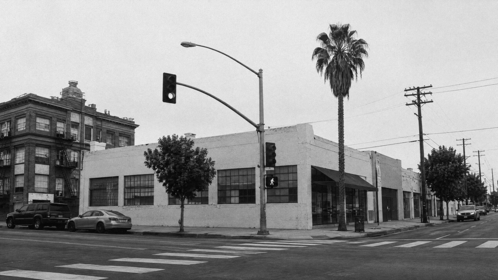

ABOUT
WHAT WE BELIEVE
We aren’t here to fight culture wars or win arguments. We want to look at Jesus and live the way he lived, so that when you go home, what you remember is Jesus.
Everyone is welcome to come curious. You don’t need to have it figured out to find belonging here.
We are affiliated with the Evangelical Covenant Church. Read what the Covenant believes

STATEMENT OF FAITH
1GOD: FATHER, SON, AND HOLY SPIRIT
We believe in one God, eternally existing as Father, Son, and Holy Spirit, three persons, one God. God is the Creator and Sustainer of all things, holy, loving, just, merciful, and faithful.
We believe in Jesus Christ, the eternal Son of God, through whom all things were created. He became fully human while remaining fully divine, lived without sin, proclaimed and demonstrated the kingdom of God, died for our sins, rose bodily from the dead, ascended to the Father, reigns as Lord, and will return to renew all things.
We believe in the Holy Spirit, fully God and present with God’s people, who gives new life, reveals Christ, indwells believers, produces Christlike character, gives gifts for ministry, empowers the Church for witness, and leads God’s people in truth.
Scripture: Matthew 3:16-17; Matthew 28:19; John 1:1-3, 14; John 14:16-17; Colossians 1:15-20; 2 Corinthians 13:14; Ephesians 4:4-6.
2SCRIPTURE
We believe the Holy Scriptures, consisting of the Old and New Testaments, are inspired by God and are the trustworthy and authoritative Word of God. Scripture is our final authority for faith, doctrine, and the way we live as followers of Jesus.
We read all of Scripture in light of Jesus Christ, who is its fulfillment and center.
Scripture: Psalm 119:105; Luke 24:27, 44-47; John 5:39-40; 2 Timothy 3:16-17; Hebrews 1:1-3; 2 Peter 1:20-21.
3THE GOSPEL
We believe the gospel is the good news that God’s kingdom has come near in Jesus Christ.
Jesus lived the life humanity was created to live, announced and demonstrated God’s kingdom, gave his life for our sins, and was raised bodily from the dead. Through his death and resurrection, Jesus defeated sin and death, reconciled us to God, and inaugurated God’s new creation.
Jesus is now risen and reigning as Lord. He calls all people to repent, believe the good news, follow him, and receive the life of his kingdom.
The gospel is therefore not only the message of how individuals are forgiven, but the announcement that Jesus Christ is Lord and that through him God is reconciling and renewing all things.
Scripture: Isaiah 52:7; Mark 1:14-15; Luke 4:18-21; John 3:16-17; Romans 1:16-17; 1 Corinthians 15:1-8; 2 Corinthians 5:17-21; Colossians 1:19-20.
4HUMANITY AND SIN
We believe every human being is created in the image of God and therefore possesses inherent dignity, worth, and value.
Humanity was created for relationship with God, one another, and creation, but sin has corrupted these relationships. All people participate in sin and experience its consequences, including alienation from God, brokenness, injustice, and death.
Human beings cannot restore themselves to God through their own goodness or effort and are in need of God’s grace and redemption.
Scripture: Genesis 1:26-28; Genesis 3:1-24; Psalm 8:3-6; Romans 3:23; Romans 5:12; Romans 6:23; Ephesians 2:1-3.
5SALVATION AND NEW LIFE
We believe salvation is the gracious work of God accomplished through Jesus Christ.
Through repentance and faith in Christ, people receive forgiveness of sins, reconciliation with God, new birth, adoption into God’s family, and the gift of the Holy Spirit.
Salvation cannot be earned but is received by grace through faith. This grace does not merely forgive us; it begins the lifelong work of transforming us into the likeness of Jesus.
Followers of Jesus are called to surrender their lives to him, grow in holiness and love, and participate in the life and mission of his kingdom.
Scripture: John 1:12-13; John 3:3-8; Acts 2:38; Romans 3:21-26; Romans 5:1-2; Romans 8:14-17, 29; Ephesians 2:8-10; Titus 3:4-7.
6THE CHURCH
We believe the Church is the people of God, the body of Christ, and the dwelling place of the Holy Spirit.
Everyone who belongs to Christ belongs to his Church. Local churches are communities of disciples who gather to worship God, learn the Scriptures, pray, celebrate the sacraments, encourage one another, care for one another, and are sent into the world as witnesses to Jesus.
The Church is called to display through its shared life a foretaste of God’s coming kingdom.
Scripture: Acts 2:42-47; 1 Corinthians 12:12-27; Ephesians 2:19-22; Ephesians 4:11-16; 1 Peter 2:9-10.
7BAPTISM AND THE LORD’S SUPPER
We believe Jesus entrusted Baptism and the Lord’s Supper to his Church.
Baptism identifies us with Jesus Christ and his people and bears witness to God’s saving grace and new life.
In the Lord’s Supper, the Church remembers and proclaims Christ’s death, celebrates his presence among his people, and anticipates the coming kingdom.
Scripture: Matthew 28:18-20; Acts 2:38-41; Romans 6:3-4; 1 Corinthians 10:16-17; 1 Corinthians 11:23-26.
8DISCIPLESHIP AND THE MISSION OF GOD
We believe every follower of Jesus is called to become increasingly like him and participate in his mission.
Jesus sends his Church to make disciples, proclaim the gospel, love our neighbors, care for the poor and vulnerable, pursue justice and mercy, practice reconciliation, and demonstrate the life of God’s kingdom through both word and action.
The Church does not exist for itself. We join Christ in pursuing people with love and participating in God’s work of renewal in our neighborhoods, cities, and world.
Scripture: Micah 6:8; Matthew 5:13-16; Matthew 22:37-40; Matthew 28:18-20; Luke 10:25-37; John 20:21; Acts 1:8; James 1:27.
9RESURRECTION, JUDGMENT, AND NEW CREATION
We believe Jesus Christ will return personally and visibly and bring God’s kingdom to its fullness.
The dead will be raised, God will judge the world with perfect justice, evil and death will finally be defeated, and God’s people will enjoy everlasting life in his renewed creation.
Our Christian hope is not ultimately escape from the world, but resurrection and the renewal of all things under the reign of Jesus Christ.
Scripture: Matthew 25:31-46; John 5:28-29; Acts 17:31; 1 Corinthians 15:20-28, 50-58; Philippians 3:20-21; Revelation 21:1-5; Revelation 22:1-5.
OUR VALUES
- CHRISTis our center
- PRAYERis our power
- BELONGINGis our culture
- CURIOSITYis our posture
- GENEROSITYis our response
- NEXT GENERATIONis our future